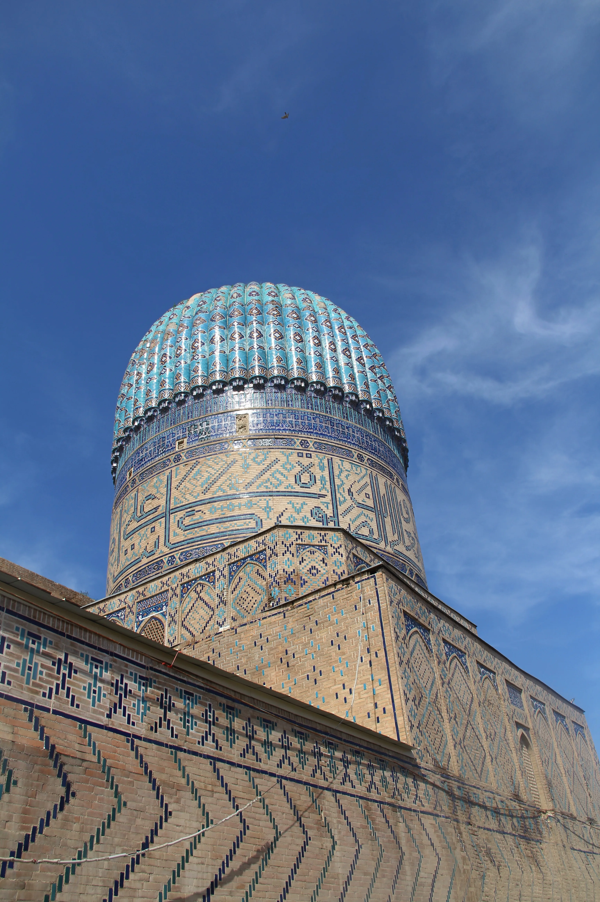
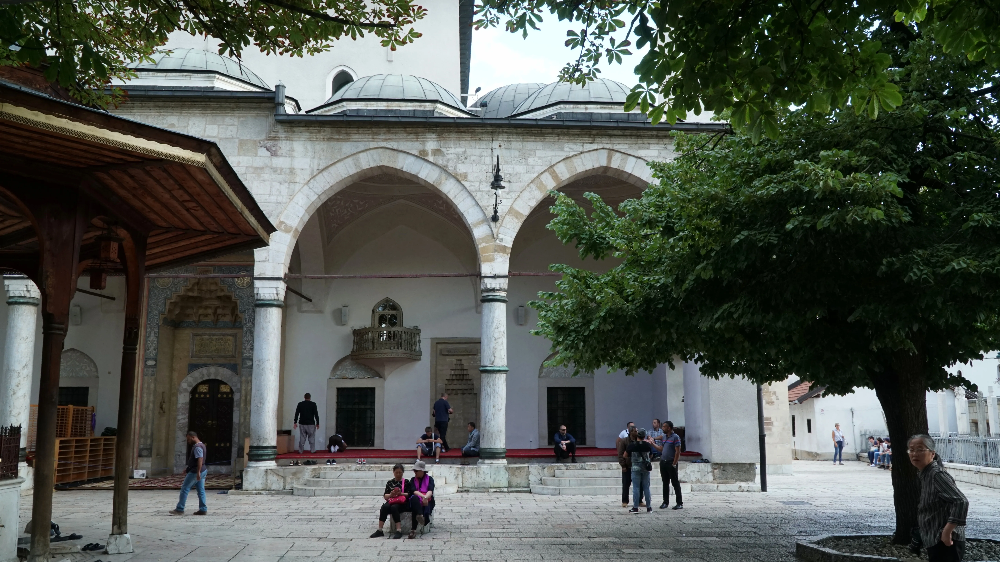
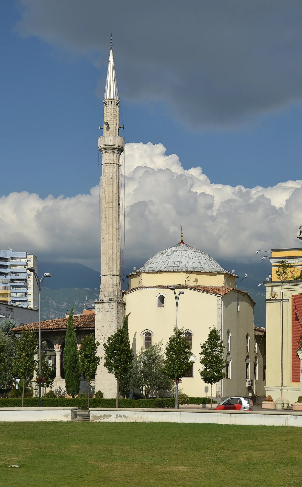
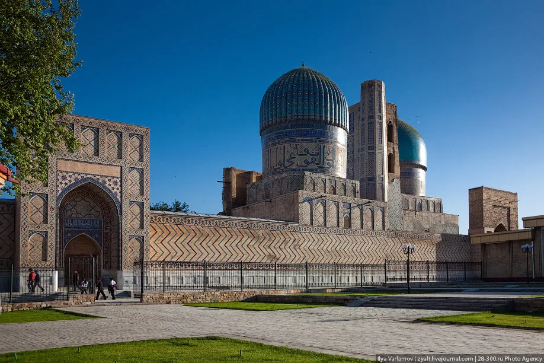

Accueil › Blog › Samarcande, Sarajevo, Tirana : les mosquées d'Asie centrale et des Balkans
Découverte · 6 min de lecture · 2026-02-16
Samarcande, Sarajevo, Tirana : les mosquées d'Asie centrale et des Balkans
De Samarcande à Tirana en passant par Sarajevo, ces trois mosquées jalonnent une route moins connue de l'architecture islamique : celle de l'Asie centrale timouride et des Balkans ottomans, où l'islam s'est enraciné dès le Moyen Âge sans jamais cesser d'y être pratiqué.



Bibi-Khanym, la démesure de Tamerlan
Construite entre 1398 et 1404 sur ordre de Tamerlan (Timur), la mosquée Bibi-Khanym de Samarcande devait rassembler toute la population masculine de la ville pour la prière du vendredi. Timur fit venir des architectes et artisans de sa campagne d'Inde pour la bâtir à l'échelle de son empire ; à son achèvement, c'était l'une des plus grandes mosquées du monde islamique. La construction hâtive fragilisa cependant l'édifice, et l'arc de son portail principal s'effondra lors d'un séisme en 1897.
Gazi Husrev-beg, cœur spirituel de Sarajevo
Construite en 1530, financée par le waqf du gouverneur ottoman Gazi Husrev-beg, la mosquée Gazi Husrev-beg est la plus grande mosquée historique de Bosnie-Herzégovine et l'un des exemples les plus représentatifs de l'architecture ottomane classique dans les Balkans. Gravement endommagée par les bombardements du siège de Sarajevo (1992-1996), elle a été restaurée dès 1996, redevenant le symbole de la résilience de la communauté musulmane bosniaque.
Et'hem Bey, la mosquée qui a survécu à l'athéisme d'État
Commencée vers 1791 par Molla Bey et achevée au début du XIXe siècle par son fils Haxhi Et'hem Bey, la mosquée Et'hem Bey de Tirana se distingue par ses fresques représentant arbres, cascades et ponts, rares dans l'art religieux ottoman tardif. Fermée durant la période communiste, quand l'Albanie se proclama officiellement premier État athée du monde, elle a survécu grâce à son statut de monument historique protégé. Le 18 janvier 1991, environ 10 000 personnes y assistèrent à la prière du vendredi malgré l'interdiction gouvernementale encore en vigueur, un moment resté dans les mémoires comme la fin de facto de l'interdiction religieuse en Albanie.
Trois destins, une même continuité
Ces trois mosquées, séparées par des milliers de kilomètres et plusieurs siècles, racontent chacune une résilience différente : celle d'un édifice trop ambitieux pour ses propres fondations à Samarcande, celle d'une reconstruction après la guerre à Sarajevo, celle d'une résistance silencieuse à l'interdiction religieuse à Tirana.
À découvrir
Mosquées citées dans cet article

Mosquée Bibi-Khanym
Voulue par Tamerlan comme l'une des plus grandes mosquées du monde islamique, au cœur de Samarcande.
Mosquée Gazi Husrev-beg
La plus grande mosquée historique de Bosnie-Herzégovine, cœur spirituel de Sarajevo depuis 1530.
Mosquée Et'hem Bey
Petite mosquée aux fresques uniques, devenue symbole de la liberté religieuse retrouvée en Albanie.
À propos du contenu de cette page — Ce site propose un contenu éditorial et culturel rédigé avec soin et le souci du respect des traditions religieuses concernées ; il ne constitue pas un avis théologique ou une source d'autorité religieuse. Malgré nos vérifications, des erreurs, imprécisions ou approximations peuvent subsister. Si vous en repérez une, merci de nous la signaler via la page Contact ou par e-mail à qibla.mosk@gmail.com — nous la corrigerons avec gratitude.